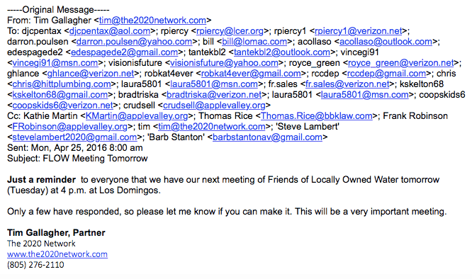

- Further emails show Town PR firm, 20/20 Network, held secret
FLOW
meetings since early 2016 to combat Right to Vote on Debt campaign efforts
Last month, we alerted citizens to two leaked emails that were sent to us that had been sent out to certain people in the Apple Valley community, urging them to go to the Town Council and speak in favor of the Town’s multimillion eminent domain takeover of Liberty Utilities.
Town Spokesperson Kathie Martin stated that this wasn’t done in secret.
Now, the appearance of a new email from April 25th, 2016 shows the Town’s PR person, Tim Gallagher, inviting a group of people that includes Town staff, to a FLOW
meeting — one that was almost certainly secret to Apple Valley taxpayers.

According to Lena Russell, who was once a participant in FLOW, said that the meetings started in early 2016 when Apple Valley residents were signing petitions to put The Right to Vote on Debt on the November 2016 ballot.
The Town was concerned with the presence of signature gatherers, and sought to unite eminent domain proponents in their messaging,
stated Russell.
Russell left when Town staff could not show how they could pay for millions and millions of debt, and it became increasingly clear from the inability to answer that not only were rates not going to go down under Town control — they were likely to go up.
In addition to the taxpayer funded PR people, were Town staff present at the meetings?
Almost always,
said Russell, as well as at least two Town Councilmembers at most meetings. (Town Spokesperson) Kathie Martin was always there. They were held at Domingo’s for as long as I was involved, which was through June of 2016.
What is FLOW
?
FLOW stands for Friends of Locally Owned Water
groups which support government takeovers of private water companies. Across the United States though, FLOW has been funded by a group called Food and Water Watch,
which fights any and all efforts towards privatization in local government. A generally leftist organization, they fight against oil drilling, free speech, and for leftist trade policies.
Was this FLOW aligned in any way with Food and Water Watch?
Will Measure F be funded by a leftist organization from Washington, D.C.?
Developing …